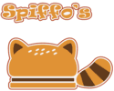
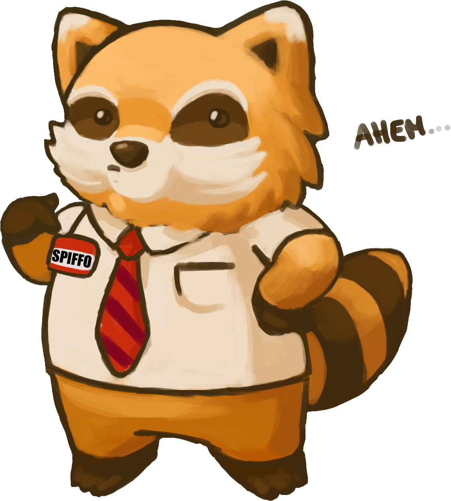
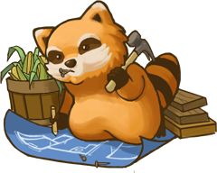

Welcome to the Project Zomboid Spiffo’s CEO Challenge!

"The world might have ended but Spiffo’s is forever."
You were supposed to report for work this morning but the situation outside has turned upside down. A few weeks ago you interviewed for the Manager position at your local Spiffo’s® franchise and you were pretty sure you were gonna get it! You have decided to take matters into your own hands and run the restaurant yourself. Who knows, you might even be CEO one day once all this madness is over!
The Rules
Starting Conditions
- You have to use Extinction mode as a base in Sandbox settings and turn Zombie Respawn to None.
- Acceptable Sandbox Changes - Light Bulb Lifespan, Maximum Fire Fuel Hours, Allow Mini-Map, Farms not on Ground Level, Helicopter to Often instead of Sometimes, but not Never or Once.
- You are NOT ALLOWED to make any other sandbox changes besides the acceptable changes listed above.
- You must start as a Burger Flipper, the rest of the build is up to you.
- You are allowed to start in almost any town through Sandbox Settings, BUT YOU MUST START in a town that has a Spiffo’s®!
- You have to start with a Spiffo’s® t-shirt on.
- Every run must be streamed on Twitch or Youtube, use the SpiffosCEOChallenge hashtag or keyword.
- If you want to update your progress, post a message, youtube short or twitch clip in the spiffosceochallenge channel in the "Room Where it Happens" discord.
- Mods: There is a list of mods you must start with, linked below.
- Mods Note: Outside of the mods listed, I ask that you only use QOL mods and not mods that signfificantly change the gameplay or automate it. This should be a hard challenge!
Required Mods
Long Term Challenge Goals
Locations and Building Goals

- You must reclaim, clean up and repair all Spiffo Restaurants in the game.
- Brandenburg, Irvington Speedway, Irvington, Rosewood, Riverside, Muldraugh, Dixe Highway/Tioga Road Crossroads, West Point, Crossroads Mall
- LV Locations: LV Airport, Dixie Highway across from St. Peregrin Hospital, Hyacinth and S Shelby, 3rd St and Wolfe Tone St, Spiffo's® HQ, Fossoil Field, Grand Ohio Mall, Trotter and Butcher St
- You can use the Knox Buildworks mod to repair and replace broken windows or other damages like broken doors.
- You must provide clean running water and power to all Spiffo Restaurants in game.
- By the end of year one (July 9th, 1994) you are required to live fulltime in any Spiffo's® Restaurant.
- You must not alter the base structure of the Spiffo's® Restaurant, but you are allowed to add additional floors or buildings on the premises. Use Knox Buildworks so the walls/windows are the same as the restaurant.
- You must reclaim the entire Spiffo's® HQ tower in LV! You don't have to repair everything though, only the Restaurant itself
- Every Spiffo's® is required to have a Spiffo's® Shrine with "The Glorious Spiffo" on the property. The recipe can be found in the Knox Buildworks mod.
- Every Spiffo's® must contain at least one trapped Raccoon as a pet with access to food and water because we love raccoons! This may or may not break local food safety standards...
- You must pick up the Spiffo Statue in front of the LV Spiffo's® HQ and place it on the roof. You are not allowed to just build one with "Knox Buildworks". The "Spiffo Statue Fix" mod allows you to pick up the statue and move it.
- At least ONE of your Spiffo's® is required to have a mannequin with the full Spiffo suit on display. Since we can't repair Spiffo suits, a damaged one is okay, but it must be clean of grime and well... lets face it, blood.
- You are required to keep all restaurants in clean and good working order. If any windows or doors are broken by zombies, they must be fixed. If any blood is ever spilled inside the restaurant, it must be cleaned up.
Special Events at Spiffo's®!
- Starting in 1994, you are required to celebrate your birthday at any Spiffo's® restaurant once per year. The party has to include one party hat, one present, one slice of cake, and at least one Spiffo plush (or any of the PAWS gang) must be present.
- This doesn't have to be your IRL birthday, it can be any date, but it has to be celebrated on the same day every year starting in 1994.
- Starting in 1994, You are required to serve at least one Holiday Themed Item on Halloween, Thanksgiving and Christmas every year. Suggested items include Halloween or Christmas Candy, Pumpkin Pie, fresh cooked turkey or ham slices.
- You must prepare and consume the item so you can't just re-use the same item every year. The vanilla craftable food mod lets you make candy btw!
Collection Related Goals
- Every Spiffo's® location needs to be restocked with each of the following food items in the freezer:
- 10 Burgers, 10 Fries, 10 Onion Rings, 10 Chicken Nuggets, 10 Pancakes, 10 Scrambled Eggs, 10 Tato Dots, 1 Pie, 10 Cups of Coffee, 10 Bottles or Cans of Soda, Mustard, Ketchup, Mayonnaise, Salt, Pepper and Barbecue Sauce
- You can use the Vanilla Craftable Foods mod to create foods or ingredients that are hard to find or go bad quickly, or grow/forage some of the ingredients yourself.
- Every Spiffo's® location needs to be restocked with each of the following items:
- 10 Forks, 10 Spoons, 10 Knives, 10 Mugs, 1 Plastic Tray, 1 Paper Bag, 1 Straw, 1 Fountain Cup, 1 Paper Napkin
- You must fully repair at least ONE Spiffo's® vehicle. Every part must be at 100% except for items the game doesn't let us fix yet.
- You must collect every single plushie of the PAWS family including the Big Spiffo plush.
- You must collect and create two Spiffo's® outfits: Spiffo's® Employee and Spiffo's® CEO.
- Spiffo's® Employee Outfit - Black shoes, pants (any color), Spiffo T-Shirt, Spiffo's® Server Apron and either a Spiffo's® Server Hat OR Spiffo's® Baseball Cap.
- Spiffo's® CEO - Suit Jacket (any color), Suit Pants (any color), Briefcase, Spiffo Mug and Spiffo tie. You are very likely to find all after clearing every single Spiffo's® on the map. If you have cleared, cleaned, repaired and restocked every single Spiffo's® Restaurant and still have not found a Spiffo Tie or Spiffo Mug, you are allowed to spawn them in via debug.
- You are required to collect at least ONE rare Spiffo's® memorobilia item - Spiffo Hood Ornament, Spiffo's® Keyring, Spiffo Pencil, Spiffo Pen or Spiffo Sleeping Bag.
Lastly, and the most important rule, YOU ARE REQUIRED TO HAVE FUN! There are no prizes, there are no submission spreadsheets etc. This is a just for fun challenge!